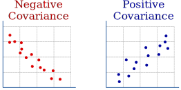

Covariance

Covariance is a single number we can calculate from a list of paired values.
It tells us if the paired values tend to rise together, or if one tends to rise as the other falls.
The Calculations
Imagine we have pairs of values (x,y), ..., we do these calculations:
- Find the mean of the x values
- Find the mean of the y values
Then for each pair of values:
- subtract the mean of x from the x value
- subtract the mean of y from the y value
- multiply those together
And lastly:
- sum up all those multiplications
- divide by n−1 (where n is the total number of pairs)
And we get the covariance.
Example: Ice Cream Sales
The local ice cream shop keeps track of how much ice cream they sell versus the temperature on that day. Here are their figures for the last few days:
| Ice Cream Sales vs Temperature | |
| Temperature °C | Ice Cream Sales |
|---|---|
| 14.2° | $215 |
| 16.4° | $325 |
| 15.2° | $332 |
| 22.6° | $445 |
| 17.2° | $408 |
Find the mean of the x values (temperature) by adding them up and dividing by how many:
mean of x = 14.2 + 16.4 + 15.2 + 22.6 + 17.25 = 17.12
Find the mean of the y values (sales in dollars):
mean of y = 215 + 325 + 332 + 445 + 4085 = 345
Then for each pair of values subtract mean of x from x, mean of y from y and multiply:
- (14.2−17.12)(215−345) = −2.92 × −130 = 379.6
- (16.4−17.12)(325−345) = −0.72 × −20 = 14.4
- (15.2−17.12)(332−345) = −1.92 × −13 = 24.96
- (22.6−17.12)(445−345) = 5.48 × 100 = 548
- (17.2−17.12)(408−345) = 0.08 × 63 = 5.04
Add those results up and divide by n−1
The answer is positive: that tells us the x and y values tend to rise together.
That is all it says. Not how strongly linked they are. Not how fast they rise or fall. Just that they tend to rise and fall together.
A negative result would say that x rises as y falls (and vice versa).
A zero result (rarely happens with statistical data) just means the covariance does not let us know if x and y rise or fall together.
Covariance:
- positive says they rise and fall together
- negative says that one rises as the other falls
The size of the covariance is not important. Imagine we used cents instead of dollars: we would get much larger values but the data still has the same relationship.
Note: the covariance can also be useful in other calculations.
Formula
As a formula covariance is:
Where:
- n = number of pairs
- Σ means sum up (see Sigma Notation)
- xi and yi are each pair of x,y values
- x̄ and ȳ are the mean of x and mean of y
Upgrade to Correlation
Correlation has a few more steps in its calculation but also gives the useful result of telling us how well related x and y are.
Why n−1 ?
We divide by n−1 in the final step when our data is a sample (which it usually is) because we are unsure of the true population mean.
But if our data is the entire population then we should divide by n in the final step.